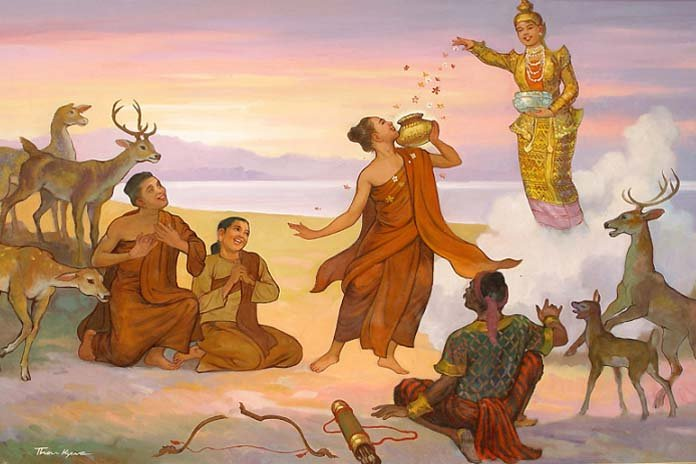
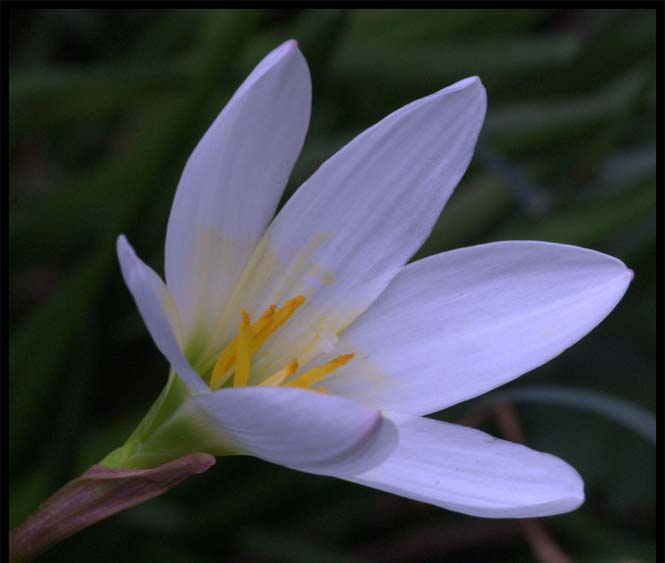

Wakhaun(Wagaung): August
Written by Khin Myo Chit and Junior Win ( Flowers & Festivals )
5.Wakhaun(Wagaung)
Splendour
from the edge of heavens above.
Altair, the golden king of stars,
shines brightly.
The breeze comes softly
in Leo's season.
Right, Left, wherever one looks,
land lilies with their pollins spread.
Fragrant all around.
Wakhaun(Wagaung)
"Waso- Wagaung, the rivers swell with rising billows -"so goes the saying. The monsoon is now in full swing and it is a busy time for paddy growers. Fields are ploughed and paddy plants are now ready to be transplanted.
Living in cities one can hardly appreciate the monsoon whatwith black asphalt roads slippery with blobs of mud and oil.Heavy rains do not encourage going places.Nothing to do but gaze out of the window and coin epithets to describe the massive sheet of showers outside.
Only in the rural areas does one see the beauty of the rains.On the outskirts of small towns and villages, fieds stretch out endlessly - white panorama of rippling waters under torrential rains.Once the showers thin away, a few trees scattered over the landscape take a bow.
Then there comes forth a burst of mass singing as the girl tranaplanters respond to the young men playing drums and cymbals as they walk along the ridges of the fields.Since they have already done their share of work which is ploughing, they are strolling with their musical instruments to entertain the girls. They wear wide brimmed coolie hats made of palm fronds.
The yang men look dashing and gallant.Their coolie hats,drums and cymbals are decorated with gaily coloured silk tassels.The musicthey play is suggestive of tunder rolling from miles afar culminating in a deluge of rain showers.The songs they sing are playful and teasin.
Listen-oh listen my love.
The peal of my drum.
Resounding like a brass gong.
Come,oh come closer my love.
My little bird of sweet trilling notes
Sometimes the girl's response is not veryencouraging.
Love me,love me.
So they sing.
So they say.
Those iddling swains.
Walking on the ridges.
Daily they sing.
Daily they stroll.
Love you?Indeed.
No,no,not me.
I'm not free.
I've got my own lover!
Rice planter girls have to work in rain and mud and they were rough home spun clothes, but they do not allow themselves to be shorn of feminine charms,as one of their songs shows.
Let'sput the golden bark.
The fragrant bark.
On the stone slab.
And grind-grind-grand.
Then let's put the paste
Thick and smooth.
Onthe face so fair.
One item among the beauty aids of Myanmar women,high and low,young and not so young, is thanakha bark.The bark is used as skin conditioner or face pack or make-up foundation.No rice planter girl will go into the fields without her face make up with thana kha paste-a beautifier as wellas protation against weather.
The young men of the drum music troupes often sing complaining that they have no way of knowing whether a girl is un attache or not,so cute and winsome with blobs of thanakha paste on her cheeks how are they to know that she may have a couple of kids at home?
To such an outrageous affront,the girls retort saucily:
Oh,you men.
Strolling the ridges.
With drums and cymbals. br Oh,you-with kids and wife back home-
Go-go-get lost!
You,eye-sores!
After they have had their fill of banter and quips.,they begin to strike a tender note;
Oh,my love. How the sun's rays lash you. You drooping at the edge of planting field.
As the sun blazes right on the heels of heavy showers and the rays are none too kindly,the girls respond.
Sweetheart,hoist your blanket. O a rope. And please make a shade.
Paddy fields are rural folks'life and hope .when the fields come froth with a bright promise of plentiful harvest, the farmers' thoughts turn to alms-giving. There are sons and grandsons to be novitiated and so many celebrations like settling in anew home,or anniversaries to be observed with alms-glving.
Deeply rooted in the Myanmer Character is afeeling that their worldly goods are not worth having unless they serve the good cause of the Buddhist sasana (Teaching)which is the very foundation of agood way of life. EveryBuddhist does his share of supporting the Buddha's Order of Monks by giving a morsel of rice daily to the monks,which is in itself a contribution towards the cause.
As the rice planters labour in the fields braving the inclemencies of weather,they sing of the time when the golden grain is ripe on the stalks.then will the newly wedded couple do the alms-giving together;this act will seal their bond of love that will last not only life but all the lives to come.
Wagaung is a month for alms-giving by casting lots.According to the custom, communal groups solicit donors to prepare almsbowls, one or more each depending on the means and will of the donoe.Each bowl is filled with a portion of rice meal with curry and accompaniments like sweets and fruits.
Monks are invited to receive the bowls and lots are cast.Each monk receives whatever bowl his lot falls.Casting of lots does not end there. Each donor is given a number of his bowl and lots are cast again for the winning number. The lucky donor often receives a sum of money. Usually the winner, overjoyed that he is being given the opportunity to do more deeds of merit, uses the money for yet another alms-giving.He often adds something from his own pocket to make the gift more substantail.
Casting lots for alms-bowl is a festival full of fun and promise. It is called the Maha Dok festival.It all began with a man called Maha Dok, who lived during the life time of the Buddha.The story runs as follows.
Maha Dok was a very poor man who never had a chace to do any deed of merit.One day some citizens invited the Buddha and his monks to the city and people were asked to help with the offering of alms food. Each citizen took the responsibility of offering alms food to one or more monks, according to his will and means.
Maha Dok, poor though he was, promised to host a monk. He and his wife worked hard to earn to get an alms bowl and food to go with it. The man took a job of cutting firewood and he did it singing with it. The man took a job of cutting firewood and he did it singing happily as he worked. His employer was struck by his cheeriness and asked him what he was so happy about.Maha Dok said he had a very rare opportunity to offer alms food to a monk. The employer, glad at heart to see such a man, gave him choicest rice grains to cook alms food.The wife, who took the job of winnowing and pounding rice grains, did her job singing happily.When the lady of the house was told of the reason of the poor woman's happiness for the prespective alms-giving, she gave her some ingredients for cooking, like butter and groceries.
Maha Dok and his wife, happier still because of the good will of their friends, prepared the rice meal. So great was their enthusiasm that Thagyarmin, king of the celestials above, came to them disguised as a labourer and helped them with their cooking.He, thought a powerful celestial, was anxious to gain a share of merit, by helping them.
When the day came for allotting monks to their respective hosts, it was found that Maha Dok's name had been overlooked. The poor man was numb with grief. He was to be a poor man, without a single deed of merit to his credit, not only in his life, but for many more lives to come.At least this was what he thought.
What Maha Dok did not know was that his efforts to do the good deed and his goodwill that went with them all amounted to a meritorious deed. Thargyarmin, king of the celestials had yet to play his trump card.He himself had caused the slip to occur in the allotment of monks.It was the Buddha himself who was left without a host, as it turned out!
So the lot fell to Maha Dok to offer alms food to the Buddha.There was a great uproar, Princes, Lords and rich men ran after Maha Dok, offering bales of silver, gold and jewels to buy the privilege of offering alms food to the Buddha. But Maha Dok did not give so much as a glance at their offers. He was ecstatically happy that he was to host the Buddha.
The Buddha partook of the alms food Maha Dok offered and praised his good deed. Thagyarmin, because he helped Maha Dok to do the deed, was also blessed. He then caused the shower of gold and jewels to fall in the yard of Maha Dok's house. As a good disciple of the Buddha, Maha Dok spent his wealth in good works.When his life in the human abode ended, he was reborn in the celestial regions.
The story of Maha Dok is a favourite with Myanmar Buddhist. It offers hope to the poorest; anyone can do meritorious deeds and rise up in the ladder of existences, if only one has the will. The story is dramatised on the stage and it is represented on the precincts of pagoda in paintings and sculptures.